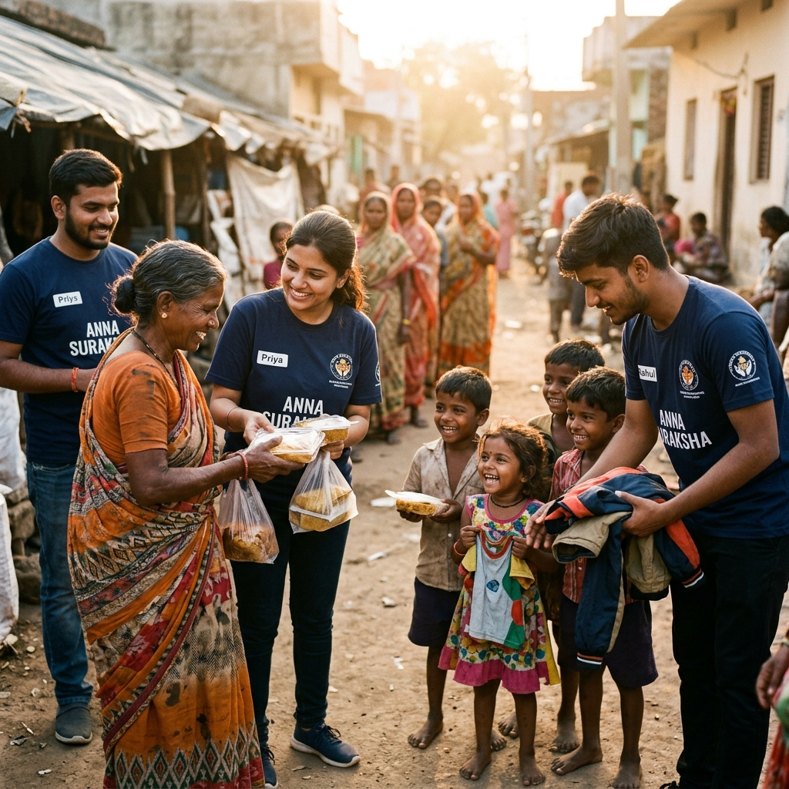
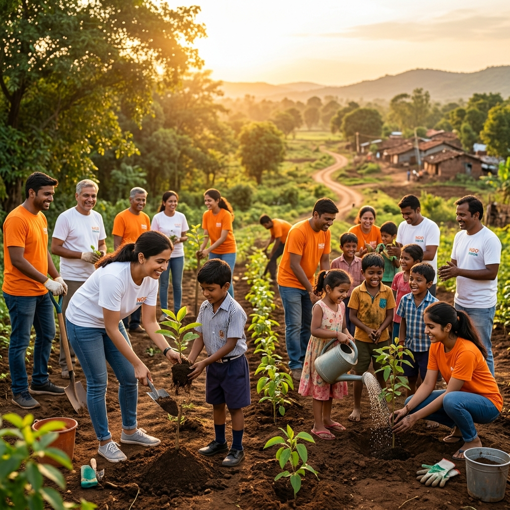
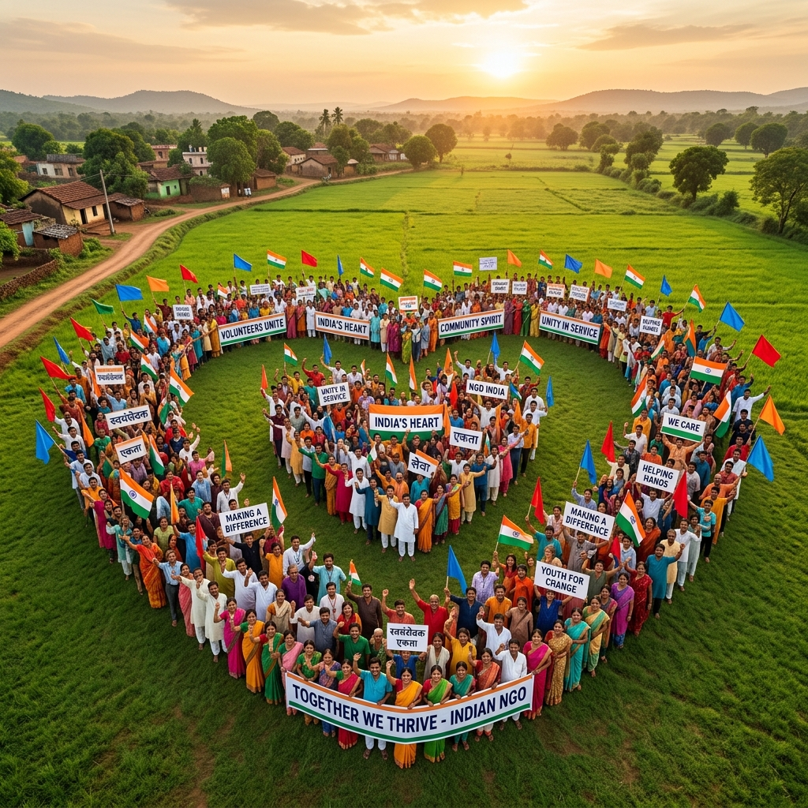
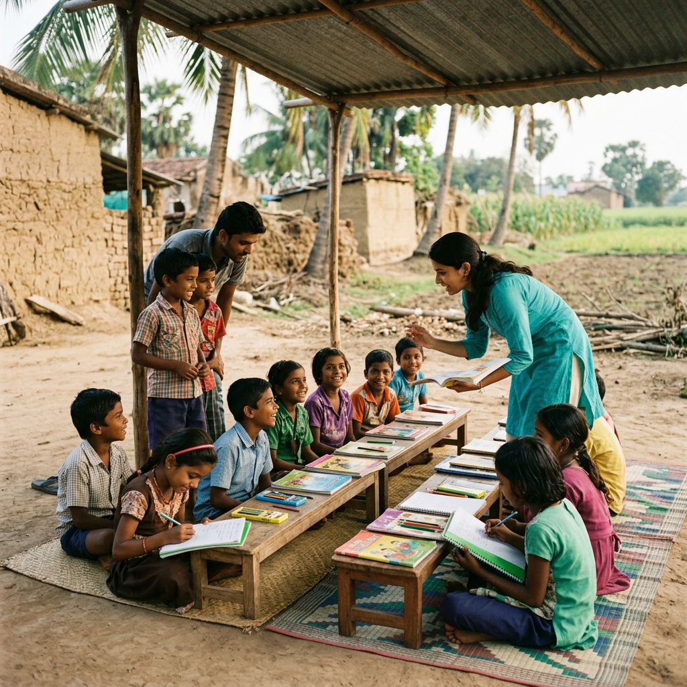
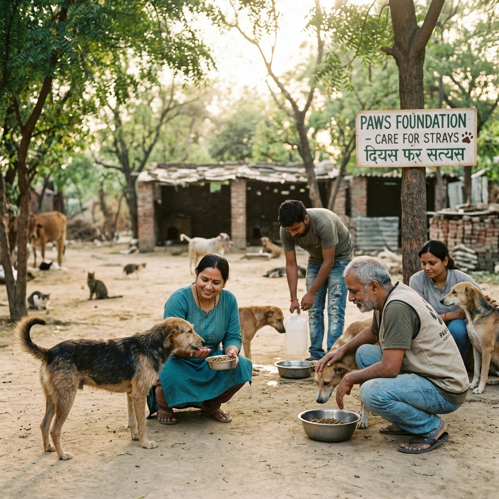
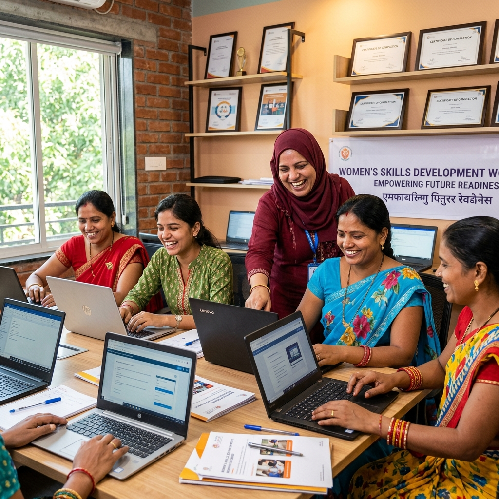
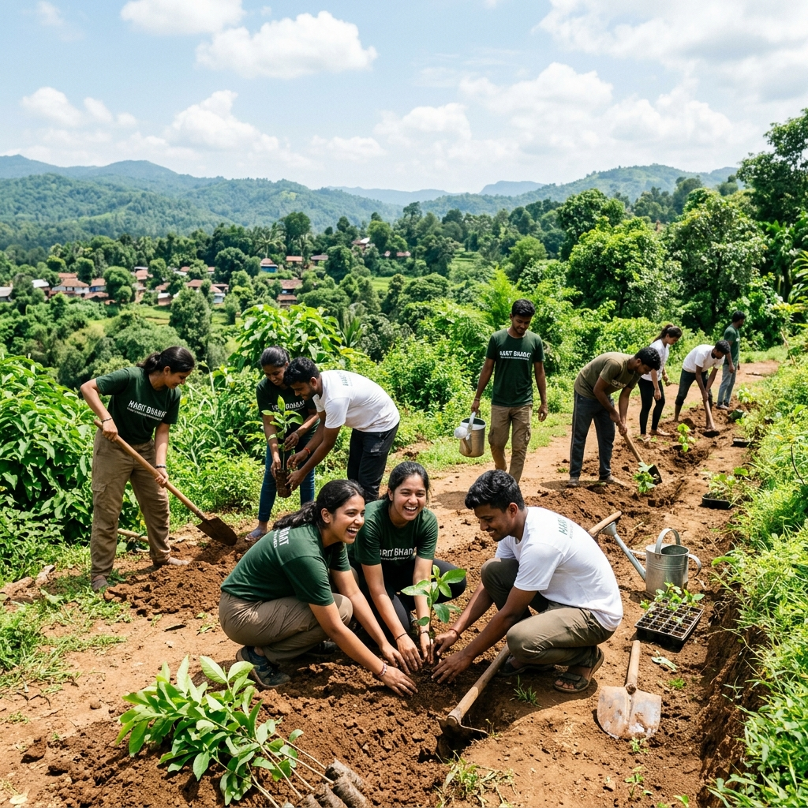
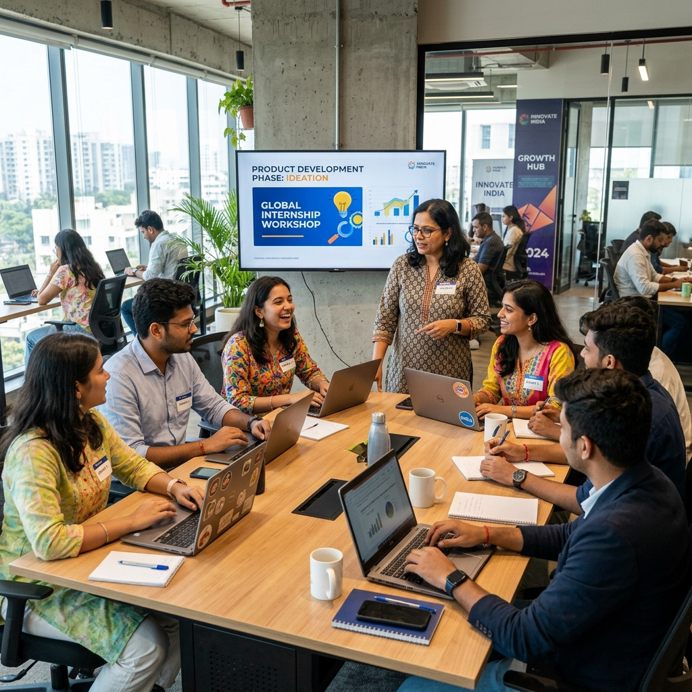

Community Support
Project Seva
Providing essential food and clothing to underprivileged communities, ensuring no one goes without basic necessities.
Learn MoreHumanity Beyond Boundaries

Empowering communities through education, environmental sustainability,
women empowerment, animal welfare, and skill development.

InAmigos Foundation is a Section 8 registered non-profit organization founded in 2020 with the belief that humanity knows no boundaries. We operate across India, uniting passionate volunteers to drive meaningful, grassroots-level social change.
From educating underprivileged children and empowering women to planting trees and protecting animals — every initiative we undertake is powered by compassion, dedication, and a commitment to a more equitable world.
Each project is a promise — a commitment to create tangible, lasting impact in the communities we serve across India.

Providing essential food and clothing to underprivileged communities, ensuring no one goes without basic necessities.
Learn More
Providing educational support and learning opportunities for children, nurturing the next generation of leaders.
Learn More
Dedicated to the care, feeding, and protection of animals, because compassion extends to all living beings.
Learn More
Empowering women through awareness, leadership training, and skill-building programs for a brighter tomorrow.
Learn More
Driving environmental sustainability through tree plantation drives and conservation campaigns across India.
Learn More
Offering internships, skill development, and career growth opportunities for students and young professionals.
Learn MoreEvery initiative at InAmigos Foundation is designed to create ripple effects of positive change in communities.
Breaking barriers to quality learning by running free educational sessions, distributing stationery, and mentoring underprivileged children through Project Bachpanshala.
82% reach increaseEnabling 900+ women with leadership skills, awareness programs, and vocational training, fostering independence and confidence through Project Udaan.
900+ women empoweredPlanting 20,000+ trees and running conservation drives through Project Prakriti to combat climate change and restore ecological balance across India.
20,000+ trees plantedRescuing, feeding, and sheltering stray and injured animals through Project Jeev, ensuring every living being receives care, dignity, and protection.
Thousands of animals helpedConnecting communities through Project Seva's relief drives and Project Vikas's career development programs, building stronger and more resilient societies.
50,000+ beneficiariesDrag to rotate and click to enlarge our campaign moments in 3D space.
Real moments. Real people. Real impact — captured from our campaigns across India.
Volunteering with InAmigos Foundation is more than giving back — it's a transformative journey of personal and professional growth.
Directly contribute to the lives of thousands across 28 states. See the tangible results of your efforts in communities that need it most.
Build practical skills in project management, communication, event coordination, social media, and more through hands-on experience.
Work alongside a diverse, passionate team of 200+ volunteers who share your values and vision for a better India.
Take charge of initiatives, lead campaigns, and grow into a community leader with mentorship from experienced changemakers.
Receive certified recognition for your contributions — valuable for academic applications, resumes, and professional portfolios.
Expand your network, gain field experience, and unlock internship and career opportunities through Project Vikas.
Join hundreds of volunteers working towards a better and more inclusive future. Your time, your effort, your compassion — it all matters.